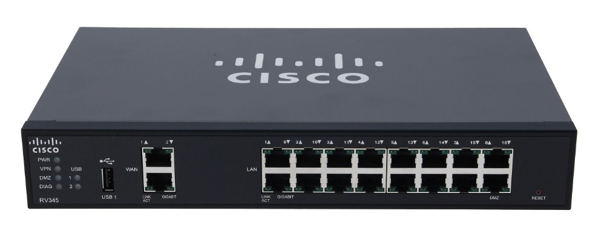
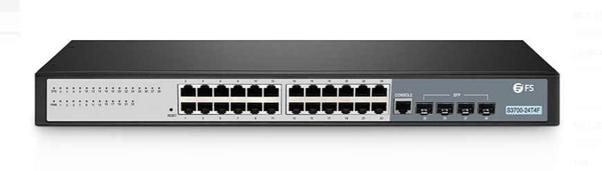
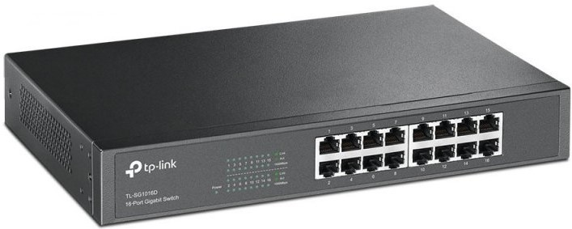
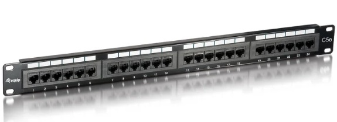
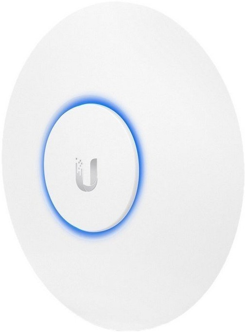
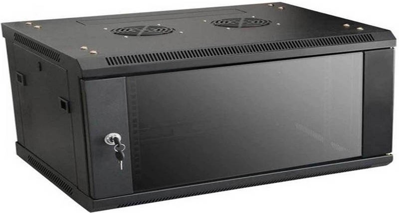

Dispositivos de red y características
Los dispositivos de red que vamos a utilizar en nuestra red local son el router, el switch y los puntos de acceso que van a dar conexión a los portátiles.
El router lo encontraremos en el CPD, desde donde vamos a distribuir toda la red. Aquí conectaremos todas las aulas. Desde el router saldrán todas las conexiones que van a conectar los distintos switches y puntos de acceso que tenemos.
Con los cables ethernet haremos la interconexión con los switches. Tendremos uno en cada una de las aulas y otro en el departamento para poder dar conexión a los diferentes dispositivos.
Por último, dispondremos de un punto de acceso en cada una de las aulas para que los alumnos puedan conectarse a la red con portátiles de forma inalámbrica.
A continuación, se hace una breve descripción de cada uno de los dispositivos de interconexión que componen la LAN junto con una foto para poder explicar cual es su funcionamiento:
Router
El router es el dispositivo principal que va a ser capaz de gestionar la red. Su función clave es permitir la interconexión entre todos los dispositivos. También es capaz de asignar una IP privada a cada uno de los dispositivos y conseguir que su conexión a internet mediante una dirección púnlica.
CISCO RV345-K9-G5
- 16 puertos Gigabit Ethernet (RJ-45)
- 2 puertos WAN
- 1 puerto de consola
- 2 puertos USB
- Gigabit Ethernet
- 10 – 1000 Mbps
- IEEE 802.1X
Switch
El switch es un dispositivo de interconexión que opera en la capa de enlace de datos. Tiene la capacidad de almacenar las direcciones MAC de cada uno de los dispositivos que componen la red LAN, los cuales están conectados a los puertos físicos de este.
S3700-24T4F, switch Gigabit Ethernet capa 2+ de 24 puertos, 24 RJ45 Gigabit, con 4 SFP de 1Gb, sin ventilador
- 24 puertos RJ-45/SPF
- 10 – 1000 Mbps
- IEEE 802.1X
- IEEE 802.3af PoE
- IEEE 802.3at PoE+
TP-Link TL- SG1016D Switch 16 Puertos Gigabit 10/100/1000
- 16 puertos RJ-45
- Fast Ethernet
- Giga Ethernet
- CSMA/CD
- TCP/IP
- IEEE 803.ab, u, x
- Full Duplex
- 10-100 Mbps
Patch Panel
El patch panel se encarga de organizar las conexiones de la red dentro del armario rack.
Equip Patch Panel 24 puertos Cat 5e
- 24 x puertos RJ45 con contactos de oro
- 45 ° doble IDC (LSA y 110) compatible
- Cumple con las normas ANSI / TIA / EIA estándar de 568
- Color de IDC T568A/T568B codificado
- 19 "1U
Punto de Acceso
Un punto de acceso es un dispositivo de red que interconecta equipos de comunicación inalámbricos.
Ubiquiti UAP AC Lite Punto De Acceso Dual Band 24 GHz
- Power over Ethernet
- 1 puerto Ethernet
- 2,4 GHz
- 5 GHz
- 10 – 1000 Mbps
- 2 Antenas integradas
Rack
Un rack es una estructura metálica cuyo objetivo es alojar dispositivos informáticos de telecomunicaciones. Sus dimensiones están normalizadas de forma que sean compatibles con cualquier dispositivo, independientemente del fabricante.
MicroConnect Armario Rack Mural 19" 4HU 600x450
- Capacidad: 4 unidades
- Ancho: 600 mm
- Profundidad: 450mm
- Altura: 245mm